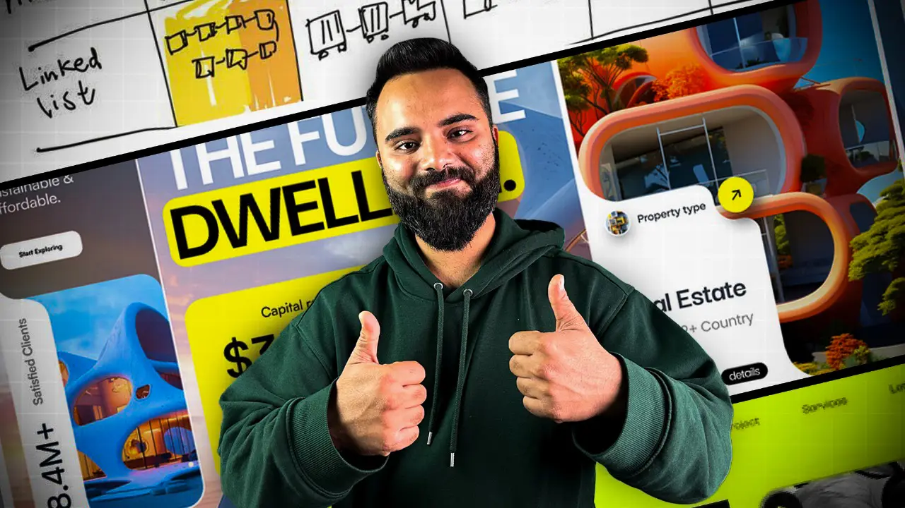
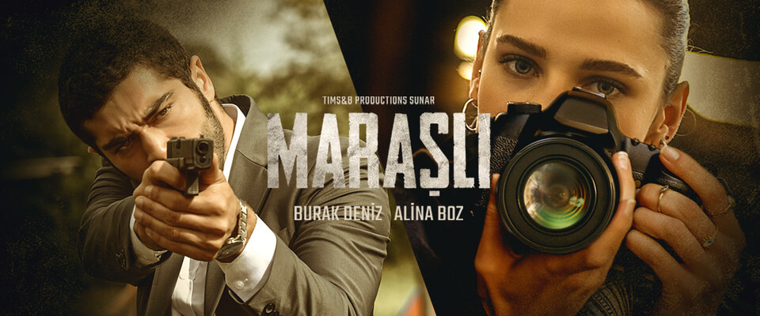

This is my first blog where i am going to tell You about my Inspiration that is Sheryians Coding School.
If I talk about them they are not only teaching,They are implementing the imagination and helping me reach Those imagination that will to take me in another world of WEB DEVELOPMENT. They are doing this Because They Are Really Good At. They provide a variety of courses that cater to different levels of expertise, from beginners to advanced developers. The instructors are experienced professionals who are passionate about teaching and sharing their knowledge.
I love to watch web series which are based on action, romance, thriller, and jealousy. So Marsali is one of these. Let's talk about Marsali, a Turkish web series which is available on turkish123 platforms. The storyline is captivating and the characters are well-developed, making it a must-watch for fans of these genres.
Marasli – is a retired soldier turned bookstore owner. For Marasli, life changed drastically after his daughter is shot. One day, the beautiful Mahur enters Marasli’s bookstore and on that very same day, she involuntarily gets involved in an incident. Marasli saves Mahur’s life and from that day onwards, their fates will be linked to each other…